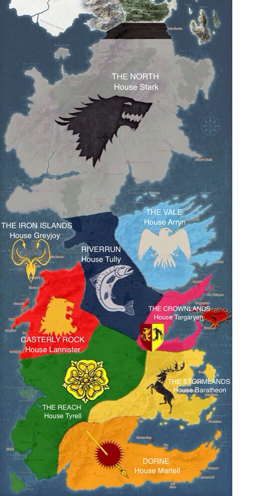

<map name="west">
  <area shape="rect" coords="131,196,276,324" href="https://gameofthrones.fandom.com/wiki/House_Stark" alt="Sun">
  <area shape="rect" coords="19,484,97,565" href="https://gameofthrones.fandom.com/wiki/House_Greyjoy" alt="Mercury">
  <area shape="rect" coords="198,540,268,636" href="https://gameofthrones.fandom.com/wiki/House_Tully" alt="Venus">
  <area shape="circle" coords="332,496,40" href="https://gameofthrones.fandom.com/wiki/House_Arryn" alt="Venus">
  <area shape="rect" coords="84,606,145,670" href="https://gameofthrones.fandom.com/wiki/House_Lannister" alt="Venus">
  <area shape="rect" coords="283,655,332,707" href="https://gameofthrones.fandom.com/wiki/House_Targaryen" alt="Venus">
  <area shape="circle" coords="176,766,40" href="https://gameofthrones.fandom.com/wiki/House_Tyrell" alt="Venus">
  <area shape="rect" coords="309,737,356,820" href="https://gameofthrones.fandom.com/wiki/House_Baratheon" alt="Venus">
  <area shape="circle" coords="219,917,27" href="https://gameofthrones.fandom.com/wiki/House_Martell" alt="Venus">
</map>